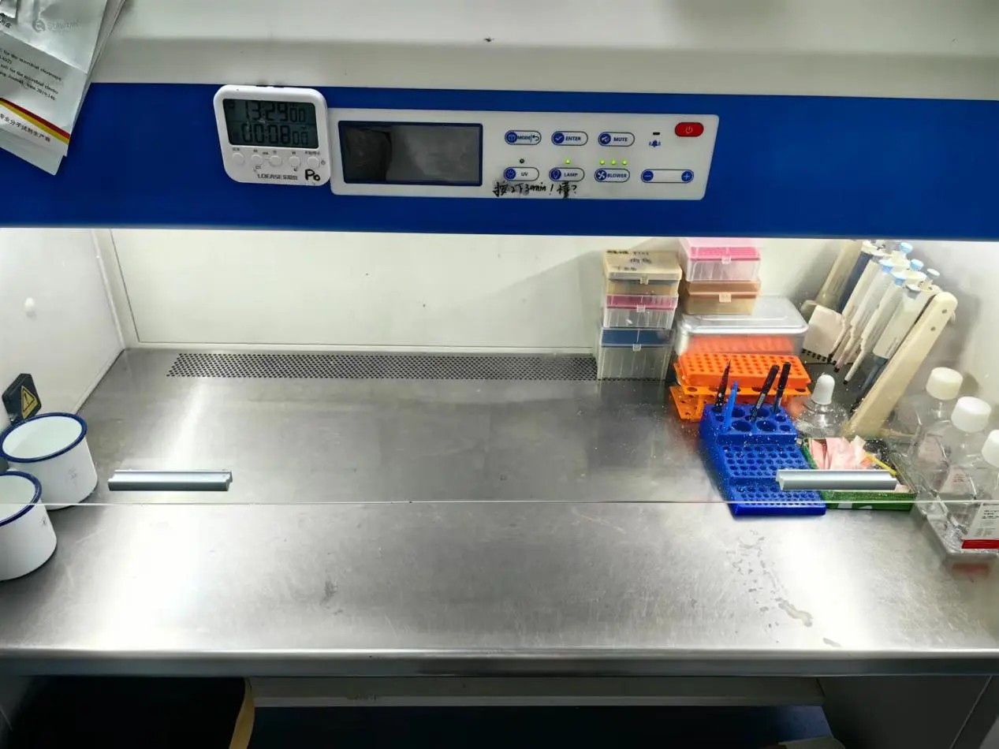
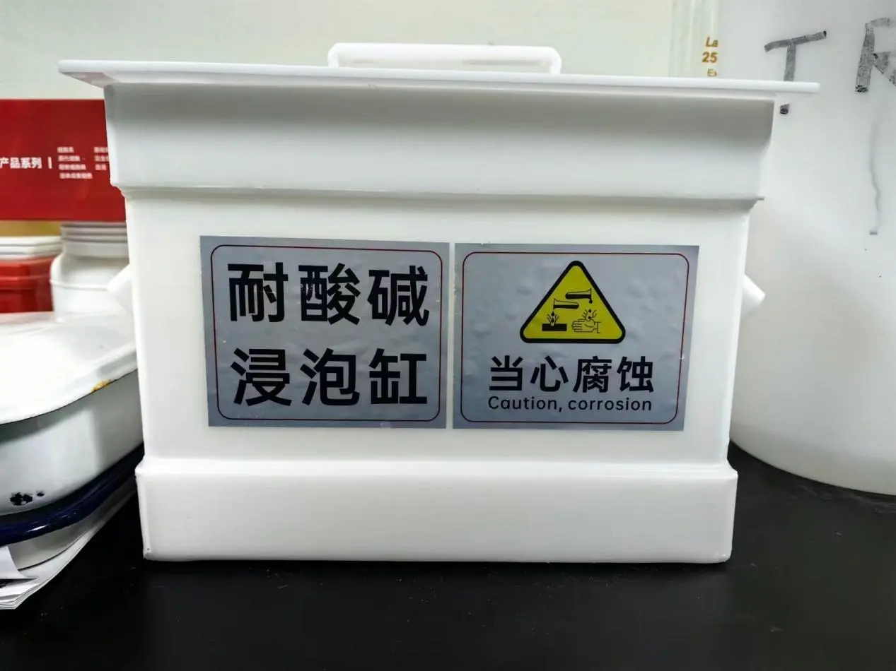
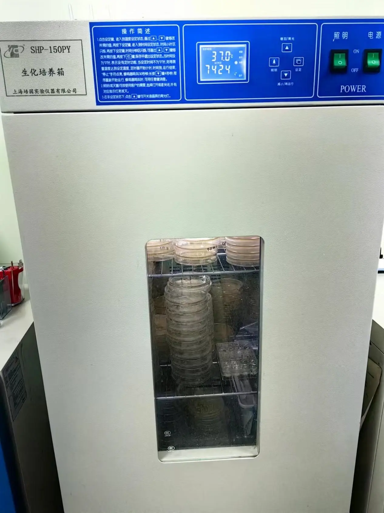
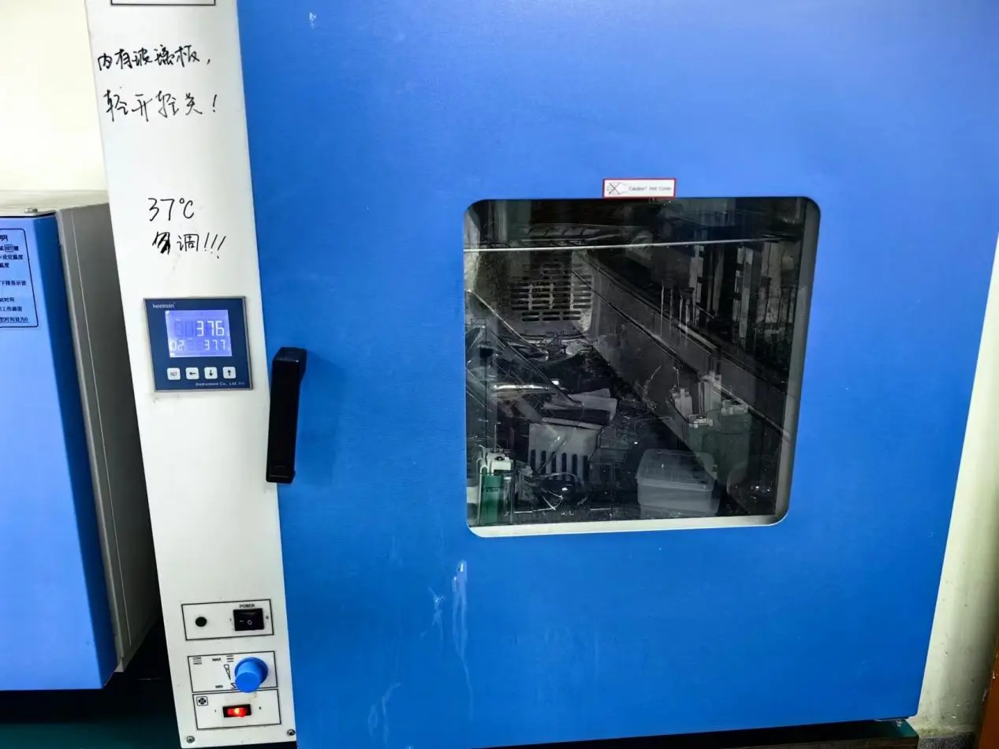
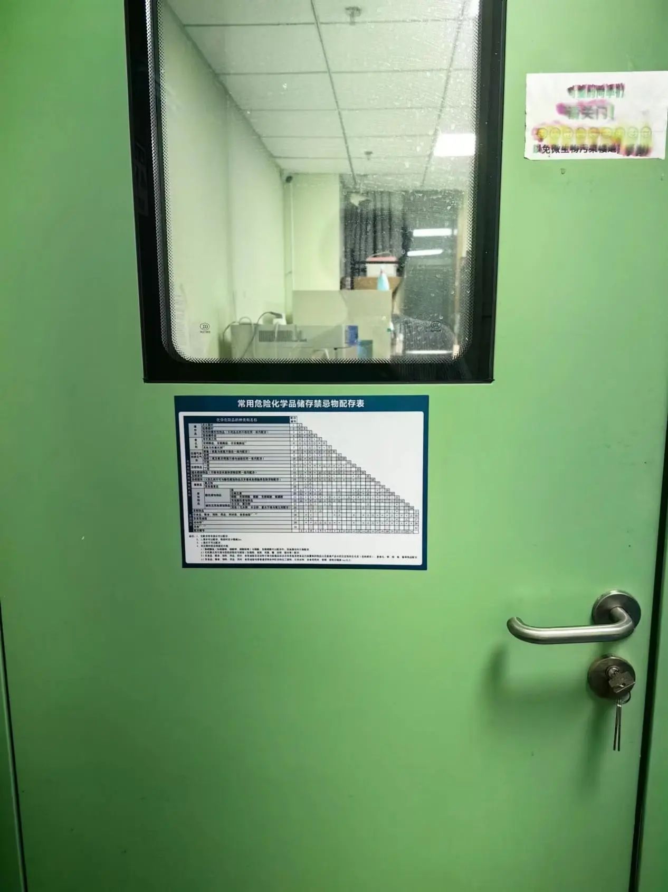
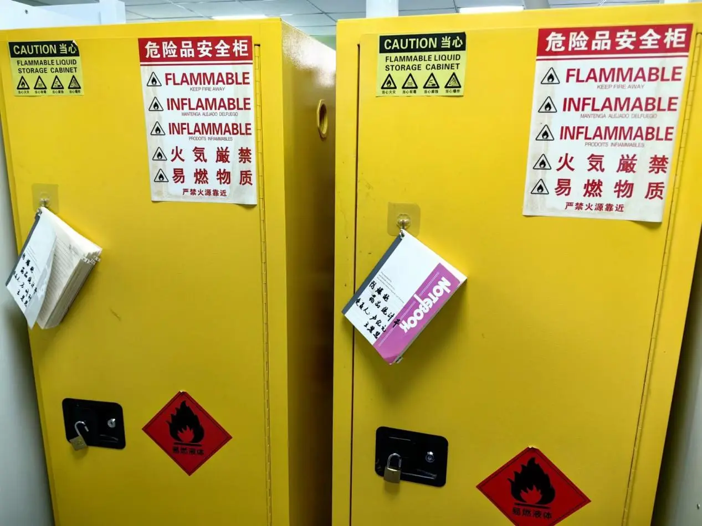
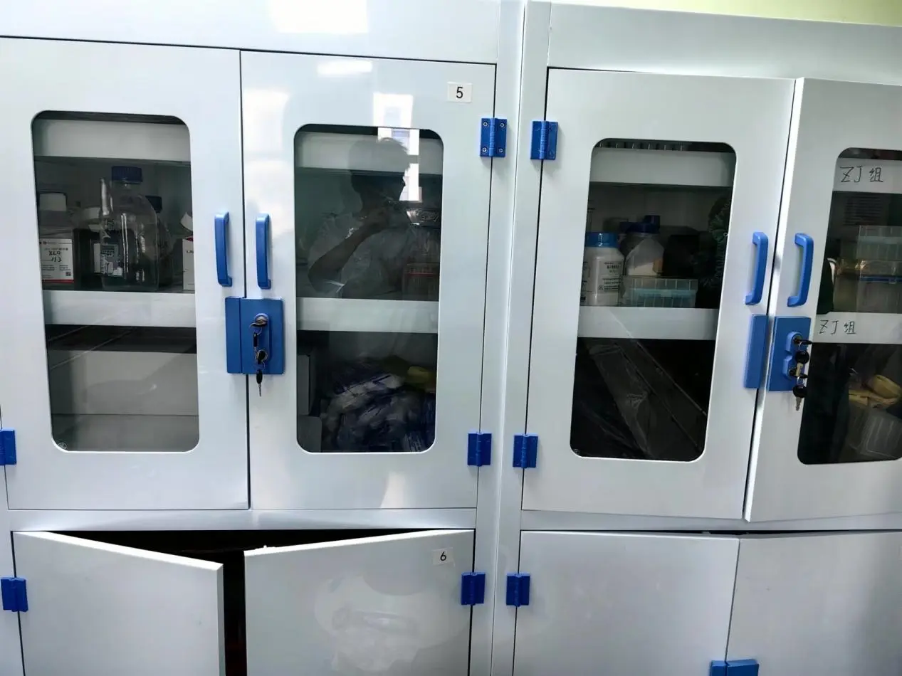

Our team prioritizes experimental safety and risk control in all our projects and actions, as safety is of utmost importance. We incorporate safety considerations throughout the project lifecycle, including experimental design, implementation, and future impacts. We adhere strictly to national and relevant institutional safety regulations to ensure the integrity of our experiments, and we have experienced instructors on hand to help us manage risks effectively.
The microorganism we use is ECN1917, which is considered a low-risk organism for humans and the environment. At the same time, we strictly adhere to safety guidelines for microbiological experiments to ensure that the microorganisms we use do not spread.
We have developed a vesicular delivery system composed of DLPC membranes that can significantly enhance the safety of probiotic delivery. By precisely modulating the release timing and dosage of probiotics, we can minimize potential irritation and side effects. Furthermore, this optimized expression system may reduce the immune system's recognition of foreign probiotics, thereby alleviating excessive immune responses. The vesicular structure also effectively inhibits the proliferation of engineered bacteria, ensuring biosafety. Additionally, the enhanced targeting capability allows probiotics to effectively reach specific organs, such as the liver and pancreas, thus minimizing their impact on other tissues and further improving overall safety. In the future, this system can be tailored to meet the individual needs of patients, facilitating more precise treatment while reducing the risk of adverse reactions.
In terms of specific experimental design, we aim to minimize risks throughout the experimental process as much as possible. We will review extensive information and select safer experimental plans to guide our work. This section is discussed in greater detail in our safety form.
First and foremost, with regard to experimental conditions, our laboratory is equipped with sufficient, accredited, and secure facilities to facilitate and ensure the successful conduct of our experiments. We operate a standard level 1 microbiological laboratory designated for the manipulation of low-risk microorganisms, such as *Escherichia coli*, which includes an ultra-clean workstation and essential protective equipment, including disposable masks and gloves. In addition, we have a range of specialized and safe experimental equipment to support our research endeavors. Furthermore, we have established a moderate containment laboratory specifically designed for experiments that necessitate elevated aseptic and safety standards, featuring a professional biosafety cabinet. To enhance personal protective measures, our laboratory provides an ample supply of disposable medical gloves and masks for all personnel, thereby significantly mitigating the risks associated with microbial inhalation and direct exposure to hazardous substances. We have also placed prominent signs at the entrance of our laboratory to ensure that all personnel can clearly understand the safety regulations and relevant precaution
   Our laboratory has established comprehensive risk control measures, equipped with sufficient emergency medical kits to provide timely treatment for personnel in the event of exposure to hazardous substances or other injuries. The laboratory walls are adorned with numerous reminders of safety protocols and standards, aimed at continuously reinforcing the safety awareness of all experimental personnel. Additionally, safety guidelines and emergency contact numbers for the safety center are prominently displayed on the outer walls to ensure that all individuals entering the facility can quickly access relevant information.
To ensure routine personal protection, our laboratory provides an ample supply of disposable medical gloves and masks, thereby effectively reducing the risk of inhaling microorganisms. Access to the entire laboratory building is strictly regulated; individuals wishing to enter must use their activated campus cards, which will not function unless they have submitted an application and received approval from the Lab Safety Center. The keys to our specific laboratory are managed by designated personnel, with access limited to authorized team members to ensure the safety of the research environment.
Furthermore, our laboratory implements a stringent and standardized management system for hazardous chemicals and microorganisms. We have designated storage spaces that are clearly marked with warning signs to enhance safety and compliance. The keys to access these areas are also securely managed by designated personnel to further ensure the effective implementation of safety management practices.
  IAccess to the entire laboratory building is strictly regulated; individuals seeking entry must utilize their activated campus cards, which will not function otherwise. Only those who have submitted applications and received approval from the laboratory safety center are eligible to activate their campus cards. The keys to access our specific laboratory are securely managed by designated personnel. Consequently, entry is restricted solely to authorized team members, thereby ensuring a controlled and secure environment for our research activities.
Before commencing any experiments, all team members undergo comprehensive training in essential laboratory skills. This training encompasses a range of competencies, including but not limited to bacterial inoculation techniques, the proper use of sterilization equipment, and protocols for personal protective measures. Such preparation significantly mitigates the risks associated with microbial exposure to human health. On the final day of training, our supervisor conducts assessments to evaluate each individual's proficiency. Those who do not meet the required standards must continue their studies until they successfully demonstrate their competence, at which point they are permitted to access the laboratory.
All waste is managed in accordance with the guidelines outlined in the Biosafety in Microbiological and Biomedical Laboratories (BMBL) table. Subsequently, the disposed experimental waste is sorted according to the waste disposal standards set forth by Lanzhou University. It is then placed in designated waste bins and transported to the university’s waste disposal transfer station at scheduled intervals for centralized processing by trained laboratory personnel.
We will conduct interviews with experts and professors to present our project and solicit their insights on various aspects, including safety considerations. Based on their feedback, we will identify and address specific safety issues that require improvement. Additionally, we will engage with the general public to introduce our project and gather their opinions and concerns. We will closely monitor the safety-related issues raised by the public, using this information to enhance the project and improve its overall safety profile.
Our experiments are conducted in strict accordance with relevant national laws and regulations, as well as the policies of pertinent institutions, and are carried out under the oversight of authorized personnel. Specifically, in China, we adhere to the *Infectious Disease Prevention and Control Law of the People's Republic of China*, the *Biosafety Management Regulations for Pathogenic Microbiology Laboratories*, the *Medical Waste Management Regulations*, the *General Requirements for Laboratory Biosafety (GB19489-2008)*, and the *General Biosafety Standard for Microbiological and Biomedical Laboratories*. Additionally, at Lanzhou University, we comply with the Laboratory Safety System established by the School of Life Sciences. Within the laboratory, we also observe specific requirements set forth by other laboratories to ensure comprehensive adherence to safety standards.